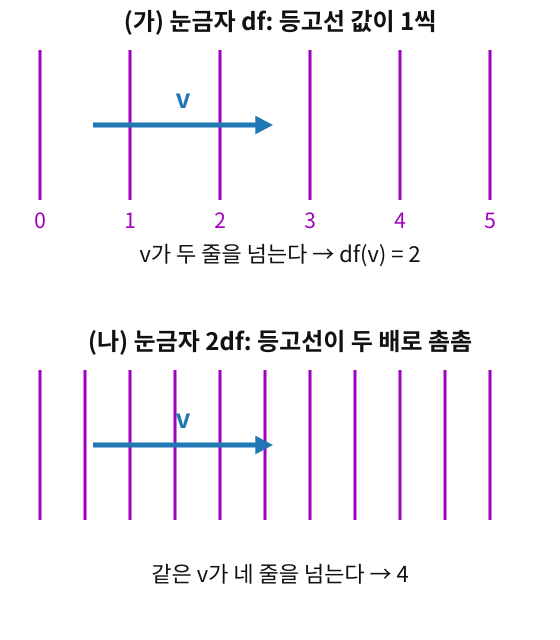

성분 vθ는 화살표 v에서 숫자 하나를 뽑아낸 것이다. 학습에서도 같은 일을 늘 한다. 매개변수를 어느 방향으로 움직일지 정하면, 그 방향으로 손실이 얼마나 빨리 변하는지를 숫자 하나로 잰다. 화살표를 넣고 숫자를 받는 일이 이렇게 거듭된다면, “화살표를 넣으면 숫자가 나오는 장치” 자체를 하나의 대상으로 다룰 수는 없을까?
구면 위 개미를 다시 보자. 적도 위 점 (θ,ϕ)=(π/2,0)에서 개미의 속도는 v=−∂θ+∂ϕ, 바깥에서 보면 (0,1,1)이었다. 이 화살표를 받아 "이 방향으로 가면 높이 z=cosθ가 얼마나 빨리 변하는가"를 돌려주는 장치를 생각하자. 이 장치를 dz라 적고 눈금자라 부른다(dz는 d와 z의 곱이 아니라 한 덩어리 이름이다. d는 미분(differential)의 머리글자로, "z가 변하는 빠르기를 재는 눈금자"라고 읽는다). 개미의 화살표를 넣으면 1이 나온다. 바깥에서 본 화살표의 높이 성분이 1이니 맞는 값이다. 개미의 좌표로도 확인할 수 있다. z=cosθ는 θ가 1 늘 때 −sinθ, 적도에서는 −1만큼 변하고, 개미의 θ 성분이 −1이니 (−1)×(−1)=1이다.
눈금자는 화살표를 넣으면 숫자 하나가 나오고, 화살표를 두 배로 하면 숫자도 두 배가 된다. 가장 단순한 눈금자는 성분을 그대로 읽는 것이다. dθ는 화살표의 θ 성분을 읽어 개미의 화살표에서 −1을 내고, dϕ는 ϕ 성분을 읽어 1을 낸다. 일반 좌표 (x1,…,xn)에서도 눈금자 dxi는 i번째 성분을 읽는다. 그러니 기저 화살표 ∂j를 넣으면 i=j일 때만 1이 나온다.
여접벡터 (눈금자 / Cotangent Vector) — 한 점의 화살표를 받아 숫자 하나를 내고, 화살표를 두 배로 하면 숫자도 두 배가 되는 장치. 한 점의 여접벡터를 모두 모은 공간이 여접공간(측정의 방 / Cotangent Space) Tp∗M이다. 화살표가 사는 방이 접선공간이라면, 눈금자가 사는 방이 여접공간이다. Tp∗M도 곱셈이 아니라 한 덩어리 이름이다. 접선공간 TpM에 별표를 붙인 것으로, 별표는 그 방의 화살표를 받아 숫자를 내는 눈금자들의 방이라는 표시다. "매니폴드 M의 점 p에 붙은 여접공간"이라고 읽는다.
눈금자를 그림으로 그리면 등고선 묶음이다. 화살표를 대어 몇 줄을 가로지르는지 센 것이 눈금자가 내는 숫자다. 등고선을 두 배로 촘촘하게 그리면 같은 화살표가 두 배로 많은 줄을 넘는다.

눈금자는 등고선 묶음 — (가) 등고선 값이 1씩 커지는 눈금자 df에 화살표 v를 대면 두 줄을 넘어 2가 나온다. (나) 등고선이 두 배로 촘촘한 눈금자 2df에는 같은 v가 네 줄을 넘어 4가 나온다
점마다 눈금자를 하나씩 매끄럽게 배정한 것은 1-형식이라 부른다(눈금자의 지도). 위의 dz처럼 함수 하나의 변화율을 재는 df가 가장 흔한 예다.
ML에서: 그래디언트는 화살표가 아니라 눈금자
그래디언트(gradient)는 흔히 가장 가파른 방향의 벡터로 배운다. 그런데 손실 L의 미분 dL은 방향 v를 받아 "그 방향으로 가면 손실이 얼마나 변하는가"를 돌려주는 눈금자다: dL(v)=∂θi∂Lvi. PyTorch가 .grad에 담아 주는 숫자 묶음 ∂L/∂θi는 이 눈금자의 성분 dL(∂i)이다.
눈금자의 성분은 화살표의 성분과 반대로 변한다. 표준편차 σ 대신 s=logσ로 좌표를 바꾸면 ∂L/∂s=σ∂L/∂σ라서, σ=0.01에서 그래디언트 성분은 100분의 1로 줄어든다. 같은 자리에서 화살표 성분은 s˙=σ˙/σ라 100배 커진다. 그런데 경사하강법의 한 걸음 θ←θ−η∂L/∂θ(η는 에타, 걸음 크기를 정하는 학습률)는 그래디언트라는 눈금자의 성분을 걸음이라는 화살표의 성분에 그대로 더한다. 성분이 서로 반대로 변하는 둘을 이렇게 섞으면 무슨 일이 생길까? 아래 문제 12에서 직접 걸어 보자.
문제 10 — 오르막 안내판
확인 등산로 안내판에 「이 구간은 1 km 갈 때마다 50 m 오른다」고 적혀 있다. (가) 0.2 km를 걸으면 몇 m 오르는가? (나) 거리를 m로 적으면, 걸음을 나타내는 숫자와 「거리 한 단위마다 오르는 높이」를 나타내는 숫자는 각각 얼마가 되는가? (다) 두 숫자는 각각 몇 배가 됐는가?
200×50,000이면 1,000만 m… 에베레스트보다 천 배 넘게 높네요. 오르는 높이 쪽은 1000으로 나눠야 해요. 1 m마다 0.05 m, 그러면 200×0.05=10 m로 맞아요.
이서연
걸음 숫자는 1000배, 「한 단위마다 오르는 높이」는 1000분의 1. 둘을 곱한 오르는 높이만 그대로야. 재는 단위가 작아지면 걸음 숫자는 커지고, 한 단위마다 재는 숫자는 작아져.
문제 11 — 눈금자 dθ를 동쪽 화살표에 대면
계산 평면의 점 (x,y)=(1,1)에서 극좌표 (r,θ)의 눈금자 dr, dθ를 dx, dy로 적어라(dθ=adx+bdy 꼴). 그리고 동쪽을 가리키는 화살표 ∂x를 넣어 dr(∂x), dθ(∂x)를 구하라.
같이 풀기 세션 11
이서연
계산할 것도 없지 않아? 눈금자 dθ는 θ 성분만 읽고 ∂x는 x 방향이니까 dθ(∂x)=0이야. 위 식에서 i=j면 0이었잖아.
김민준
나는 식으로 해 볼게. x=rcosθ, y=rsinθ에서 dθ=∂θ∂xdx+∂θ∂ydy=−rsinθdx+rcosθdy, 이 점에서 −dx+dy야. ∂x를 넣으면 −1이지.
선생님
답이 0과 −1로 갈렸네요. 눈금자 dθ에 θ 방향 화살표 ∂θ를 넣으면 무엇이 나와야 하죠? 이 점에서 ∂θ는 (−1,1)이에요.
김민준
1이 나와야죠. 제 식에 넣으면 −(−1)+1=2… 틀렸네요. 옛 좌표를 새 좌표로 미분한 걸 썼어요. θ를 x, y로 미분해야 하니까 dθ=−r2ydx+r2xdy=−21dx+21dy. 이러면 ∂θ를 넣어 21+21=1이 맞고, ∂x를 넣으면 −21예요.
이서연
0이 아니네요. 제가 쓴 δji는 같은 좌표계의 눈금자와 화살표끼리의 약속이었어요. ∂x는 (x,y) 좌표계의 화살표라, dθ가 읽으면 0이 아니에요. dr=rxdx+rydy=21(dx+dy)라서 dr(∂x)=1/2고요.
선생님
두 숫자 1/2와 −21, 어디서 본 것 같지 않아요? 같은 점 (1,1)의 동쪽 화살표를 극좌표 기저로 나누면 v=21∂r−21∂θ였어요.
김민준
성분이 곧 눈금자가 읽은 값이었네요. 화살표에서 θ 성분을 뽑아내는 장치가 dθ였어요. 제 실수는 동쪽 화살표 문제에서 서연이가 야코비 행렬을 거꾸로 썼던 거랑 모양만 다르지 같은 실수고요.
이서연
선형대수에서 쌍대 기저가 좌표를 읽어 내는 함수였던 거랑 같아. 기저를 바꾸면 쌍대 기저도 같이 바꿔야 해.
문제 12 — 같은 학습률, 다른 좌표
킬러 손실 L(σ)=(σ−0.5)2을 표준편차 σ=0.1에서 줄이려 한다. 학습률 0.1로 경사하강 한 걸음을 (가) σ 좌표에서 (나) s=logσ 좌표에서 내디딘다. 각 걸음 뒤 σ는 얼마인가? 두 걸음이 σ를 움직인 크기의 비는?
같이 풀기 세션 12
김민준
같은 손실에 같은 학습률이니까 같은 곳에 가겠죠. 코드로 확인해 볼게요… σ 좌표에서는 0.18로 가는데, s 좌표에서는 0.1008이에요. 백 배 가까이 차이 나요.
선생님
두 좌표에서 그래디언트 성분부터 견줘 볼까요? ∂L/∂σ는요?
김민준
2(0.1−0.5)=−0.8이라, σ 좌표에서는 σ가 0.1×0.8=0.08 커져요.
이서연
s 좌표에서는 ∂L/∂s=σ∂L/∂σ=−0.08이야. 눈금자 성분이라 σ배로 작아졌어. 그래서 s 걸음은 0.008.
선생님
s로 0.008 가면 σ로는 얼마를 간 걸까요?
이서연
화살표 성분은 거꾸로 σ를 곱해 돌아오니까 0.1×0.008=0.0008이에요. 눈금자라서 한 번 σ배, 화살표라서 또 한 번 σ배, 합쳐 σ2=0.01배요. 코드의 0.1008도 0.1에서 0.0008 간 거고요.
김민준
아까 오르막 문제에서 제가 한 실수랑 같네요. 「한 단위마다 오르는 높이」는 단위를 바꾸면 거꾸로 변해야 하는데 걸음처럼 다뤘어요. 경사하강법은 그래디언트라는 눈금자 성분을 화살표 성분처럼 그대로 더하니까, 좌표를 바꾸면 걸음이 달라지는 거였어요.
선생님
그래요. 눈금자를 화살표로 바꾸는 규칙을 따로 정해 두지 않았으니, 어느 좌표를 골랐느냐가 그 규칙 노릇을 대신한 셈이에요.